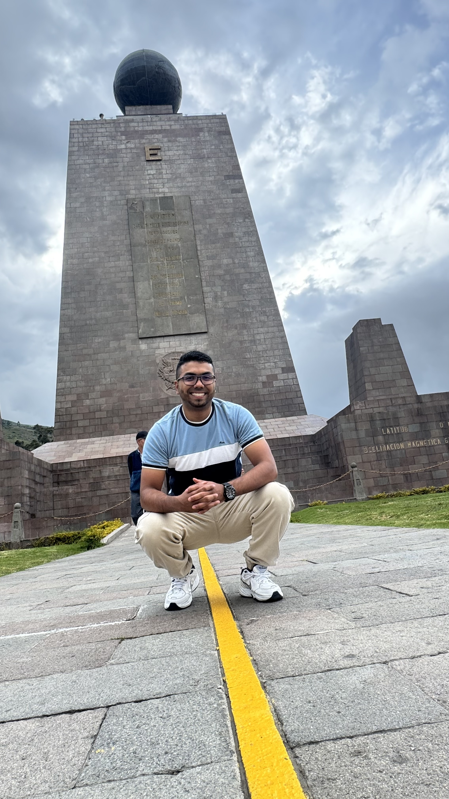
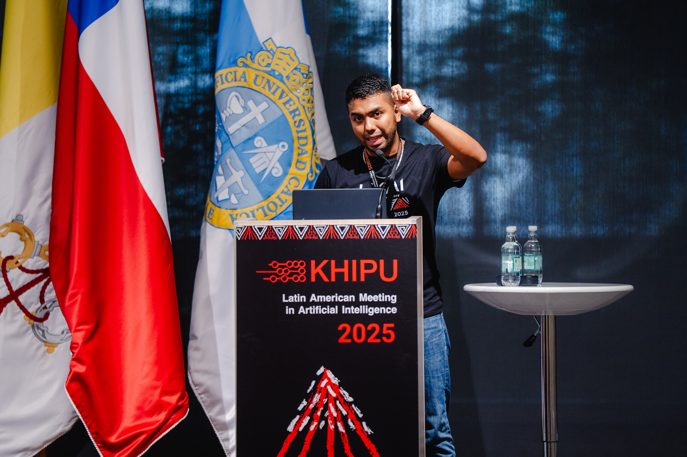
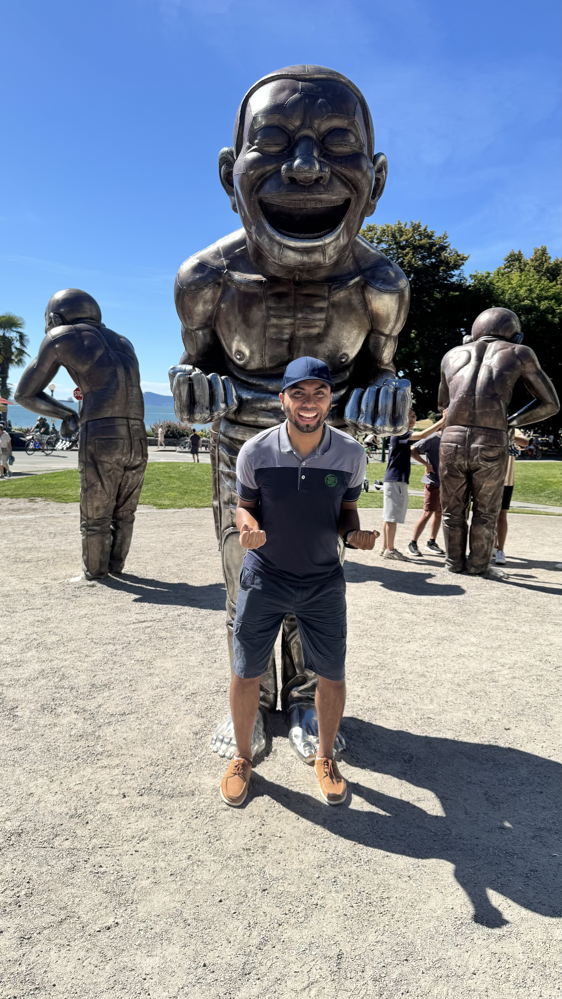
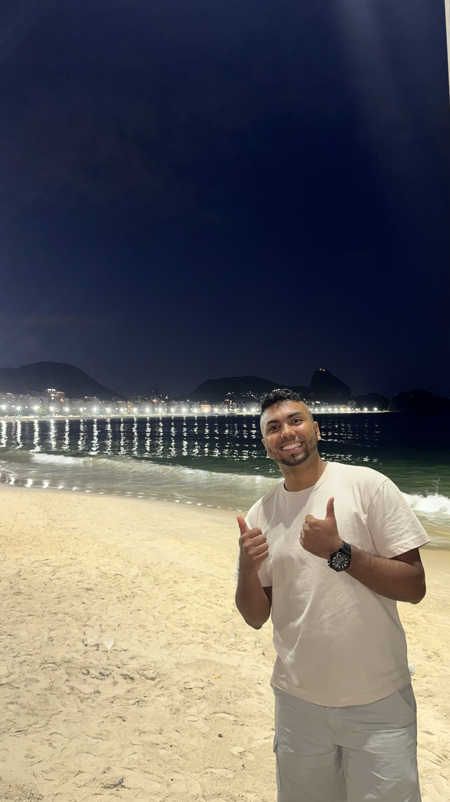
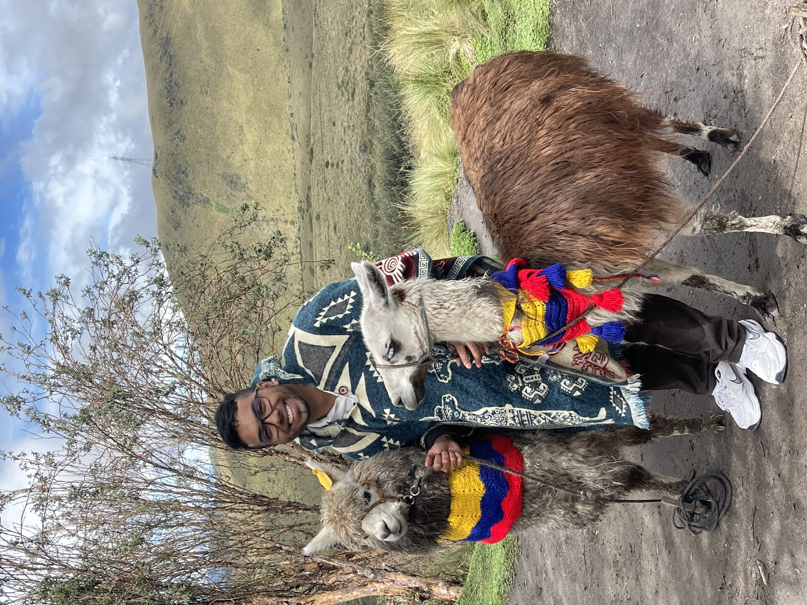
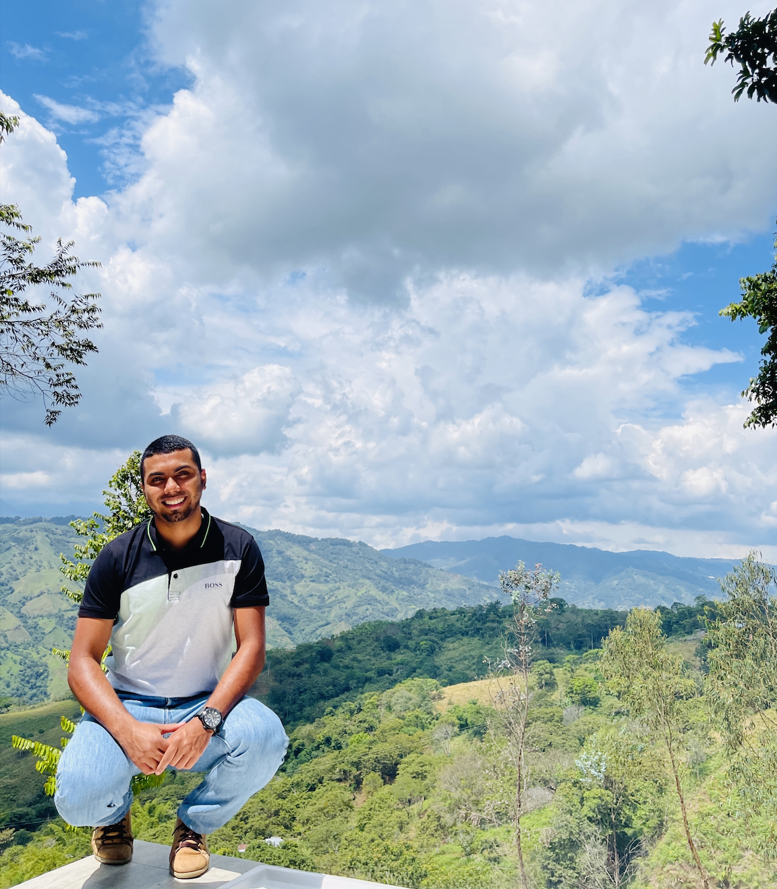

Johan Obando-Ceron










I am a third-year PhD candidate at Mila and Université de Montréal, advised by Aaron Courville and Pablo Samuel Castro. My research focuses on improving sample efficiency in reinforcement learning (RL), with the broader goal of making RL systems more practical and applicable to real-world problems. More generally, I am interested in machine learning and neural networks, particularly topics related to reasoning, world models, continual learning, and LLMs.
I spent three years as a Student Researcher at Google Brain and DeepMind working on deep RL. I hold an M.Sc. in Machine Learning from Université de Montréal (co-supervised by Marc Bellemare), and an M.Sc. in Engineering Science and a B.Sc. in Mechatronics Engineering from Universidad Autónoma de Occidente.
Outside of research, I enjoy football, swimming, drawing, and dancing. I also enjoy building and supporting spaces that broaden access to AI education and research through initiatives and communities such as Khipu, LatinX in AI, and SALA.
I grew up in El Rodeo, a working-class neighborhood in Cali, Colombia 🇨🇴. During high school, I attended Industrial Antonio José Camacho, a public technical school in the city center, where I was first exposed to electronics and programming and earned a SENA-certified technical degree. Those early experiences introduced me to problem solving, technology, and the idea that education could open opportunities beyond what I had imagined. My parents, who worked hard to support our family, taught me that goals become achievable through discipline, perseverance, and consistency. Their support encouraged me to think beyond my immediate surroundings, dream big, and believe that opportunities can be created, not only found.
My journey into research began during my undergraduate years through student research groups and early research experiences. Through projects in areas such as computer vision, robotics, and intelligent systems, I realized that research is not only about finding answers — it is about learning to ask meaningful questions and building solutions with real impact. Over time, those experiences opened opportunities I had never imagined and eventually led me to continue my academic journey internationally, first through an exchange experience in Brazil and later through graduate studies abroad. These experiences shaped how I think about research today: as a collaborative process that connects people, ideas, and real-world challenges.
Beyond research, I care deeply about building communities and expanding access to AI education and research. Through initiatives such as Khipu, SALA, and LatinX in AI, I contribute to connecting students and researchers across Latin America and supporting broader participation in international research communities. Whenever I return to Colombia, I enjoy sharing experiences with students and staying connected to where I come from. I strongly believe that talent is widely distributed, even when opportunities are not.